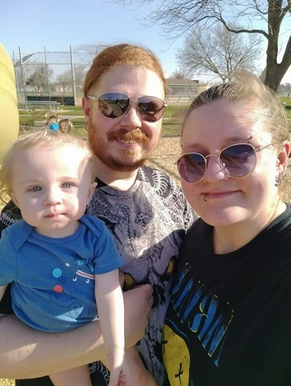
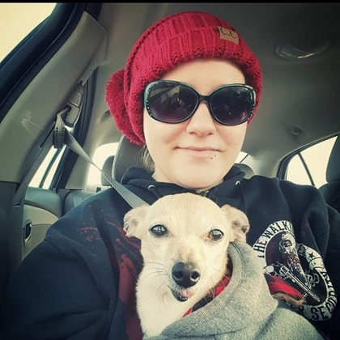

Welcome to my website All About Alex, where I will tell you everything you need to know about me.
This website will tell you my hobbies and things I like to do. I will also talk a little about myself so you will get to know the real Alex.


My name is Alex and I am 28 years old. I have a one-year-old daughter named Indie.
I had a chiweenie named Sammy for 17 years, but he passed away back in January.
My current dog is a dachshund puppy named Misha. I like to play video games on occasion,
play musical instruments, read books, and am a relatively good drawer. In high school I
was in marching band and played the clarinet. As an adult, I enjoy spending my time as a
mother to my daughter and being with my boyfriend Waylon. I was born and raised in Sioux
City, IA and moved to Sioux Falls, SD in 2018. I enjoy listening to all types of music
and listen to music daily. I also really enjoy coloring as I consider it to be theraputic.
When I was younger, I would take my dog Sammy on long walks around the neighborhood and
take him to the parks. I like to play sports on occasion, but have to be careful as I have
a very bad back due to an unknown injury. I live everyday to the fullest and try my best to
be better than the day before.